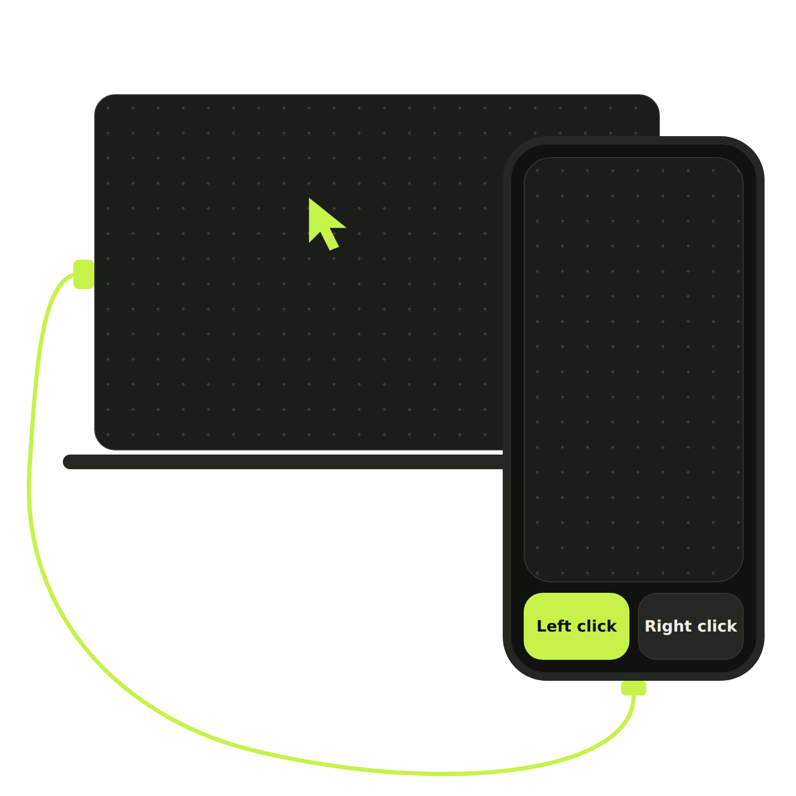

Android to Windows · over USB
Plug in a cable, open the app, and steer your Windows laptop's cursor from your phone. No Wi-Fi to join, nothing to pair, no rooting.

Why it works
The link runs over your USB cable, so there is no network to join and nothing to pair.
It works through USB debugging on a normal Android phone. Your phone stays as it is.
The Windows companion moves the actual system cursor, so it works in any app you use.
How it works
The app checks each step for you and tells you when your laptop is ready.
Put the Android app on your phone and the companion app on your Windows laptop.
Connect the cable and accept the USB debugging prompt on your phone.
Open the touchpad and move your finger. The cursor follows.
Features
One big pad for your finger, with two large buttons under your thumb.
FAQ
No. It uses USB debugging on a normal, unrooted Android phone.
Not yet. This version runs over a USB cable only.
Windows 10 and 11 laptops (64-bit). The companion app runs on Windows and moves the system cursor.
An Android phone with USB debugging. Android 8.0 or newer.
Get the Android app and the Windows companion, then plug in.
All releases · Version 1.0.0